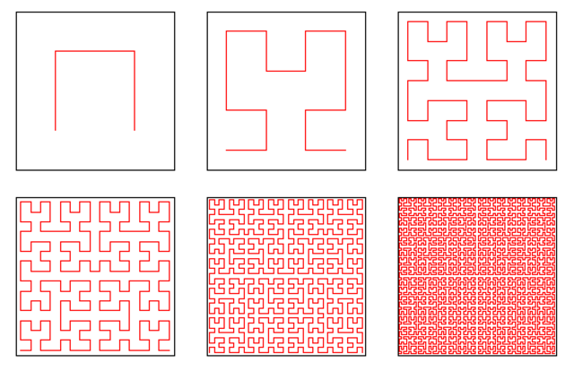

42 is for the Journey
Published on 2024-03-11
Finding meaning in the number forty-two is the reason I wrote the prophetic sections of this book (Peace, like Solomon Never Knew). While the number five corresponds primarily to God’s process for pouring blessing (or judgment) into the lives of individuals, forty-two governs God’s dealings with nations and the whole of mankind.
Forty-two is a number encrusted with modern cultural significance that has to be peeled back. The number figured prominently in works of Lewis Carroll like The Hunting of the Snark and Alice in Wonderland. In Japan, pronouncing the two digits separately sounds like their word for death. More recently, comic writer Douglas Adams said in his book Hitchhiker’s Guide to the Galaxy that forty-two is the answer to the question of life, the universe and everything. The problem was, nobody in the story knew the question, so the answer was meaningless.
It is not meaningless in the Bible! Neither is it simple. Taken as the product of six and seven, you have man’s rebellion (six) opposed by God’s perfection (seven). This number measures out how long the battle will continue until the final resolution of all conflict. That is the bad news for all who remain in rebellion. Their defeat is sure. For the faithful, forty-two is the number of steps in the journey back to Eden.
Survey of Biblical Forty-twos
Here are Biblical forty-twos used to support this meaning of journey:
Nimrod led the construction of the Tower of Babel, a human striving against the divine will which resulted in judgment. A numeric value of 294 may be derived by interpreting the letters of his name as numbers. This equating names with numbers was customary, since ancient Hebrew had no separate characters in their alphabet to use as digits. If you factor the number of his name, what do you get?
Nimrod = NMRD (no vowels in ancient Hebrew) =
Nun (50) + Mem (40) + Resh (200) + Daleth(4) =
294 = 42 x 7 = 6 x 7 x 7,
meaning a double judgement of mankind by God. Indeed, the judgment at Babel was two-fold: the tower was destroyed and mankind’s speech was confused.
A rainbow (reminder of the great flood) is visible when light is refracted by 42 degrees.
Pharaoh dreamt of seven healthy cattle followed by seven emaciated cattle. Then he repeated the dream to Joseph. Finally, Joseph explained the dream to Pharaoh: seven years of plenty followed by seven years of famine. In all, fourteen cattle are described three times, or forty-two cattle in all (making Habakkuk envious).
The Book of Job has forty-two chapters.
Balaam, a mercenary prophet hired by Israel’s enemies to curse her, in the course of three sacrifices cumulatively sacrificed forty-two animals on seven altars (Numbers 23:2, 14, 29). Balaam was killed for persisting in his mad quest for money at Israel’s expense.
Israel’s journey of wandering in the desert (Numbers 33:1-49) in perpetual conflict with God was divided into forty-two stages. The Hebrew name for the book of Numbers is Bamidbar, which starts with the Hebrew letters Mem Bet: מב here reversed because Hebrew reads right to left. Since Hebrew letters also double as numbers, those two letters form the number forty-two, with Bet = 2 and Mem = 40. In The Significance of The Number Forty-Two (42) by Rabbi Dr. Hillel ben David, the author notes a secondary structure to the forty-two stages. They are divided into three equal parts of fourteen verses each:
Even a cursory glance at the above, reveals that the entire middle section, verses 15-35, follows the standard format.
All the deviations are concentrated in the first fourteen verses and in the fourteen verses at the end.
The deviations - additions, elaborations - emphasize the departure from Egypt and entering the uninhabited desert,
on one hand, and then finally, after a lengthy stay in the desert, once again returning to civilization, specifically eretz Israel.
Elisha. After Elijah was taken up to heaven in a chariot of fire, forty-two young men mocked his successor, Elisha, for being bald. Elisha cursed them, after which two female bears mauled all the boys to death. (2 Kings 2:23-24)
King Ahaziah of Judah ascended the throne at either age twenty-two (2 Kings 8:26) or forty-two years (2 Chronicles 22:2 in many manuscripts) but only reigned for one year. The count of forty-two is assumed by scholars to be a copyist’s error, but perhaps the chronicler changed the number on purpose to symbolize God’s judgment against that king?
Daniel refers to two time periods slightly longer than 42 months. They parallel prophecies found in Revelation, hence are worth noting: And from the time that the regular burnt offering is taken away and the abomination that makes desolate is set up, there shall be 1,290 days. Blessed is he who waits and arrives at the 1,335 days. (Daniel 12:11-12, ESV)
Matthew's genealogy (believed to trace Jesus’ ancestry through Joseph, by adoption) is conspicuously divided into three sets of fourteen names, giving forty-two names in all from Abraham to Jesus. This reveals that Jesus is both man (six) and God (seven). (Matthew 1:1-17)
Luke’s genealogy is believed to trace Jesus’ ancestry through Mary. It lists Joseph’s name as a son-in-law for purposes of female inheritance from a father with no sons, transferred to her husband’s son if she marries within her tribe, according to the law set down in Numbers 36. Because Joseph’s line was cursed on account of King Jeconiah (Jehoiachin) and none of his descendants could ever again sit on the throne, the inheritance of the royal title had to come through Mary, descended from David’s son Nathan, not Solomon. Such female inheritance would only be possible if Mary had no brothers to carry on the family line. This genealogy has more than forty-two names in all. However, it lists forty-two names from David to Joseph. But since Mary is not male and Joseph is not Jesus’ father by blood, that means there are only forty-one names of male ancestors back to David, with Jesus again being the forty-second.
In Revelation, the Beast and his human followers make war against Christ and his Church for a symbolic forty-two months. (Revelation 11:2; 13:5)
Revelation also prophesies about tribulations that last for 1,260 days (Revelation 11:3, 12:6), which equals forty-two months of thirty days.
Take all those stories of suffering, conflict and judgment in. Not all end in despair. Job was restored. The people of Israel finally left the wilderness and entered Zion. Though he died, Jesus accomplished his mission, paid for our sins and rose victorious from the dead.
Another Factoring of Forty-two
Forty-two can be factored a second way; it has a second meaning.
In Jewish Kabbalistic tradition, God has a special name that is forty-two letters long:
אב”ג ית”ץ קר”ע שט”ן נג”ד יכ”ש בט”ר צת”ג חק”ב טנ”ע יג”ל פז”ק שק”ו צי”ת
Some say this name is formed by rearranging the first forty-two letters of Genesis. They therefore believe that the number is tied up with creation.
There is a simpler word that gets us there. Again taking the values of individual Hebrew letters, what happens if we add up the value for one of the most common Hebrew words for God? The singular form of God is Eloah, spelled in Hebrew (right-to-left) as:
אלוה
The values of the letters are:
א = 1
ל = 30
ו = 6
ה = 5
אלוה = 42
This means that forty-two is the measure of the immeasurable God.
The division of forty-two into three parts, both the travel itinerary in Numbers 33 and Matthew’s list of names in his genealogy suggest the factoring 42 = 3 x 14. The Book of Job also incorporates the number three in many ways. Three friends opposed Job. Then God reached out to rescue him in three ways:
- First, by speaking wisdom to Job during his suffering to enlighten his mind with truth of God’s Word (The Son).
- Second, by speaking words of comfort via Elihu to restore Job’s heart and emotions, as well as lead him into deeper holiness (The Holy Spirit).
- Third, by redirecting Job’s priorities (away from vengeance and toward forgiveness) as well as restoring Job’s physical and material well-being (The Father).
If you divide Job into fourteen chapter sections, the concluding two chapters of the first section include these powerful statements:
Though he slay me, yet will I hope in him;
I will surely defend my ways to his face.
- Job 13:15, NIV
A person’s days are determined;
you have decreed the number of his months
and have set limits he cannot exceed.
- Job 14:5, NIV
“If only you would hide me in the grave
and conceal me till your anger has passed!
If only you would set me a time
and then remember me!
If someone dies, will they live again?
All the days of my hard service
I will wait for my renewal to come.
You will call and I will answer you;
you will long for the creature your hands have made.
Surely then you will count my steps
but not keep track of my sin.
My offenses will be sealed up in a bag;
you will cover over my sin.
- Job 14:13-17, NIV
Then in the twenty-eighth chapter, Job recites a poem about wisdom, which ends in a manner similar to Ecclesiastes:
And he said to the human race,
“The fear of the Lord—that is wisdom,
and to shun evil is understanding.”
- Job 28:28, NIV
It is almost as if Job reached the same point in chapter twenty-eight that Solomon did at the end of Ecclesiastes – extolling the fear of the Lord – then was carried on further, attaining in chapter forty-two that peace that Solomon never knew. Solomon is fixated on twenty-eight times; twenty-eight is two-thirds of forty-two. That last third of Job – after the chapter on wisdom, which Solomon had in abundance – is where Job encountered the Holiness of God, repented and was restored.
We can go further in our factoring. Creation required seven days, and Genesis begins with the letter Bet, which is also the number two (representing Jesus).
42 = 3 x 2 x 7 = Father x Son x Holy Spirit
Humans are born by a creative act of the Father and nurtured physically by Him, grow through learning (the Word) and enduring suffering to be conformed into the likeness of Christ, and finally are perfected in righteousness by the Holy Spirit.
That is how forty-two is built up by multiplication. It can also be built up by addition:
42 = 40 + 1 + 1
There are myriad ways to add up numbers to form forty-two. Why choose this one? It is because of the strange way that Matthew constructed his genealogy. More than forty-two names are listed, but some are women, and in the counting of generations, they do not add to the count. Next, observe that David’s name is listed twice in the summary in verse 17:
This is the genealogy of Jesus the Messiah
the son of David,
the son of Abraham:
Abraham was the father of Isaac,
Isaac the father of Jacob,
Jacob the father of Judah and his brothers,
Judah the father of Perez and Zerah,
whose mother was Tamar,
Perez the father of Hezron,
Hezron the father of Ram,
Ram the father of Amminadab,
Amminadab the father of Nahshon,
Nahshon the father of Salmon,
Salmon the father of Boaz,
whose mother was Rahab,
Boaz the father of Obed,
whose mother was Ruth,
Obed the father of Jesse,
and Jesse the father of King David.
David was the father of Solomon,
whose mother had been Uriah’s wife,
Solomon the father of Rehoboam,
Rehoboam the father of Abijah,
Abijah the father of Asa,
Asa the father of Jehoshaphat,
Jehoshaphat the father of Jehoram,
Jehoram the father of Uzziah,
Uzziah the father of Jotham,
Jotham the father of Ahaz,
Ahaz the father of Hezekiah,
Hezekiah the father of Manasseh,
Manasseh the father of Amon,
Amon the father of Josiah,
and Josiah the father of Jeconiah
and his brothers
at the time of the exile to Babylon.
After the exile to Babylon:
Jeconiah was the father of Shealtiel,
Shealtiel the father of Zerubbabel,
Zerubbabel the father of Abihud,
Abihud the father of Eliakim,
Eliakim the father of Azor,
Azor the father of Zadok,
Zadok the father of Akim,
Akim the father of Elihud,
Elihud the father of Eleazar,
Eleazar the father of Matthan,
Matthan the father of Jacob,
and Jacob the father of Joseph,
the husband of Mary,
and Mary was the mother
of Jesus who is called the Messiah.
Thus there were fourteen generations in all
from Abraham to David,
fourteen from David to the exile to Babylon,
and fourteen from the exile to the Messiah.
- Matthew 1:1-17, NIV
The summary emphasizes three sets of fourteen generations, thus implying forty-two names. In order to get forty-two names of men in linear descent from Abraham, you need to count David twice. You could add Judah’s son Zerah, who is listed, but is not in a direct line to Jesus.
What do we do with forty-two names that only constitute forty-one generations? In my case, I became creative. Forty-one is only one more than forty, and we know that forty indicates trials and suffering. I reasoned that the first forty men are different from the last. They are mortal sinners and he is an immortal, righteous savior who was cut off.
In his humiliation he was deprived of justice.
Who can speak of his descendants?
For his life was taken from the earth.
- Acts 8:33, NIV
The church is filled with Jesus’ spiritual descendants. It is the missing forty-second generation.
Different Scales of Time
What story does this genealogy from Matthew tell? First came forty generations of struggle, sin, and suffering. Then came a climactic battle, when Jesus was victorious. Finally, the fruit of his labors, his harvest, the church.
42 = 40 suffering generations + 1 battle + 1 harvest
This is where the math comes in. In 1891, mathematician David Hilbert first described the Hilbert space-filling curve, pictured in the illustration below.

The curve is a fractal and is constructed iteratively. You begin with the simple “staple” shape. Then you replace each point on the curve with a shrunken copy of the original curve, some you rotate, then stitch the copies together with line segments to form the second curve. The process may be repeated infinitely, filling the plane with wiggles.
Why this analogy? The Hilbert curve preserves a rough impression of its initial shape even as you add details. At every scale, large to small, the same pattern is evident. It is the same with the number forty-two. We have Biblical forty-twos that...
- ... last days: from the crossing of the Red Sea to Moses receiving the law on Sinai took 42 days.
- ... last months (at least symbolically), such as the prophecies of the tribulation in Revelation.
- ... last years, such as the reign of Solomon and its aftermath. Solomon struggled as King for forty years and died. His son Rehoboam succeeded him. He faced a climactic challenge: how to govern Israel and chose wise advisors. He chose poorly, out of pride. This led to civil war and the loss of half his kingdom. No harvest.
42 = 40 yrs of Solomon + 1 civil war + 1 divided kingdom
- ... are measured in travel legs. The Book of Numbers tells us the people made forty-two stops during their years of wandering. The first forty were characterized by rebellions, plagues, defeats, and arguments over leadership and food. Then at the forty-first camp, the people of Israel won a great victory and several tribes received the first share of Israel’s inheritance: land. Then at the forty-second stop, Moses gave his final address, anointed his successor, Joshua, and died. From there the people crossed the Jordan, entered the promised land, and reaped their first harvest.
42 = 40 encampments of rebellion + 1 victory + 1 harvest
... are measured in sections of wall. Nehemiah supervised the rebuilding of the walls of Jerusalem. Individuals, families or groups each rebuilt a section. The work was divided into forty-two sections. Forty-two is the measure of our broken lives, the number of pieces that need to be repaired.
... are measured in generations of men. Matthew’s genealogy shows the struggle from Abraham to Christ to fulfill God’s covenant with Abraham. Luke shows the parallel struggle to fulfill God’s covenant with David. In both cases, Jesus faced the crisis and was victorious.
42 = 40 generations of sinners + 1 savior dying + 1 Church inheriting salvation
The Generations of Mankind
Days, months, years, generations... Could there be an even larger timescale over which God acts in multiples of forty-two? Is there a scale that stretches all the way from the creation of the world until the day that Christ returns? Over a decade ago, while meditating on the genealogy of Matthew, a thought struck me. Everybody is always trying to figure out how many years until Christ returns. They try to figure out how many years the tribulation will last or how many years between one event and another. Does God really measure out history in years? Maybe he measures it out in generations. Years are about time, a lifeless, mathematical construct. Generations are about people. Hezekiah was judged and sentenced to an early grave, but he repented and pleaded for mercy. Did that throw off God's clock? Not if he measures history in generations of people. A righteous generation may live longer, while a wicked one may live shorter. That interplay between our free will and God's plans would then permit a flexibility in the unfolding of history.
If God does measure out history in generations, how many did he have in mind? Considering Matthew, I hypothesized that it was forty-two generations. In that chronology, generations overlapped significantly. That shortened the time from Abraham to Christ. The span of forty-two greatly overlapping generations meant that the time until the savior was shortened, out of mercy.
What if God has in mind the same thing for judgment? To show mercy to the world, how would God stretch a separate set of forty-two generations so that it covers the longest period of time possible, to maximize the time until the judgment day and give a wicked world the longest amount of time to repent? God would lay down forty-two generations, end-to-end, with minimal overlap, say a single year. The question is, how many years does God tell us a human generation lasts? The Bible uses several measures throughout the Bible.
When I meditated on Matthew 1, that is what I wondered. It was another number, 120, that gave me the answer.
Note: This idea of God measuring out history according to a fixed number of generations is fully developed in the chapter "Generations Come and Go" in my book Peace, like Solomon Never Knew. This built upon an earlier, less precise analysis given in an appendix in Job Rises: Thirteen Keys to a Resilient Life. On this website, the idea will be explored further in the article Generation Clocks.
List of articles in this section: